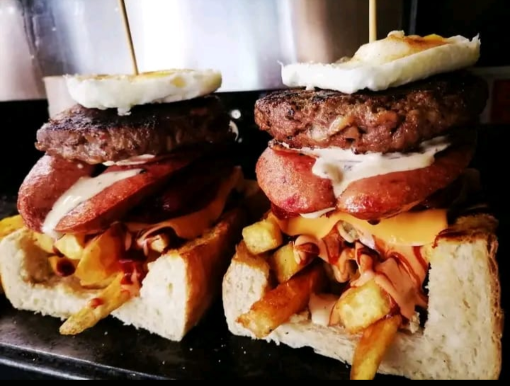

Our Vision and Mission
Vision
At Alencious’ House, our vision is to redefine the traditional Fast food experience by combining the rich heritage of this beloved dish with modern flavors, sustainable sourcing, and a welcoming atmosphere. We aspire to become the go-to destination for anyone seeking a delicious, high quality, and environmental conscious meal, whether they are visiting us for the first time or enjoying their favorite comfort food for the hundredth time.
Mission
To offer delicious, sustainably sourced fish and chips that create a memorable dining experience for all customers. We aim to provide not only a high-quality meal but also a welcoming atmosphere that makes every visit special.
Our goal is to grow into a brand that stands for:
Quality: Offering the freshest, tastiest Fast food with every serving, made from sustainably sourced ingredients.
Innovation: Bringing new twists to a classic favourite, offering healthy alternatives and locally inspired options that cater to a wide range of tastes and dietary needs.
Sustainability: Committing to eco-friendly practices in every aspect of our business, from responsible sourcing of seafood to minimizing waste and using recyclable materials.
Community: Creating a space where customers feel at home.